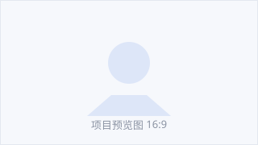

01技能
TODO：一句话补充能力侧重，例如「前端工程为主，兼顾设计与后端」
TODO：技能一0
TODO：技能二0
TODO：技能三0
TODO：技能四0
工具 / 关键词
TODO：工具一
TODO：工具二
TODO：工具三
TODO：工具四
TODO：工具五
经历
TODO：一句话说明主线，例如「两段实习 + 一个长期项目」
-
TODO：2026.03 — 至今
TODO：公司 / 组织 / 学校名称
TODO：职位或身份
- TODO：一条具体成果，最好带数字
- TODO：第二条成果
-
TODO：2024.09 — 2026.02
TODO：学校 / 项目名称
TODO：专业 / 角色
- TODO：主要做了什么
- TODO：取得什么结果
-
TODO：2023.05 — 2023.12
TODO：项目 / 社团 / 比赛
TODO：角色
- TODO：主要贡献
联系我
无论是合作、招聘还是随便聊聊，都欢迎发邮件给我。